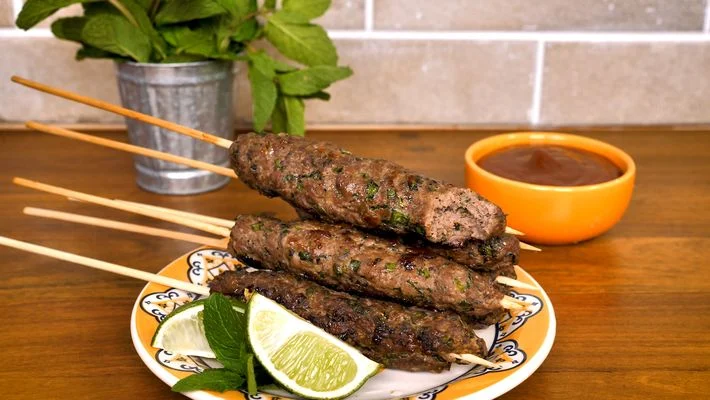

KAFTA

Ingredientes:
• 1 kg de acém moído
• 2 colheres (sopa) de azeite
• cheiro-verde picado a gosto
• hortelã picada a gosto
• suco de 1 limão siciliano
• 5 colheres (sopa) de molho inglês
• 2 colheres (sopa) de farinha de rosca
• 2 colheres (chá) de pimenta síria
• 4 colheres (chá) de sal
Modo de Preparo:
1. Em uma tigela, misture o acém moído, o azeite, o cheiro-verde, a hortelã, o suco de limão, o molho inglês, a pimenta síria, o sal e a farinha de rosca.
2. Misture tudo muito bem.
3. Pegue um pouco da massa e molde a kafta nos espetinhos.
4. Leve ao freezer por 1 hora.
5. Em seguida, apoie os palitinhos em uma forma e leve ao forno preaquecido (180° C) por cerca de 40 minutos.
VOLTAR